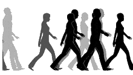

I still search
Activity - Insert animated GIF to HTML

in crowds,
in empty fields
and soarings clouds.
Activity - Insert animated GIF to HTML
In city lights
and passing cars,
on winding roads
and wishing stars.
I wonder where you could be now,
for years I've not said
your name
out loud and longer since I called
you mine-
time has passed
for you and I.
But I have learnt
to lived without,
I do not mind I
still love you anyhow.
- Lang Leav